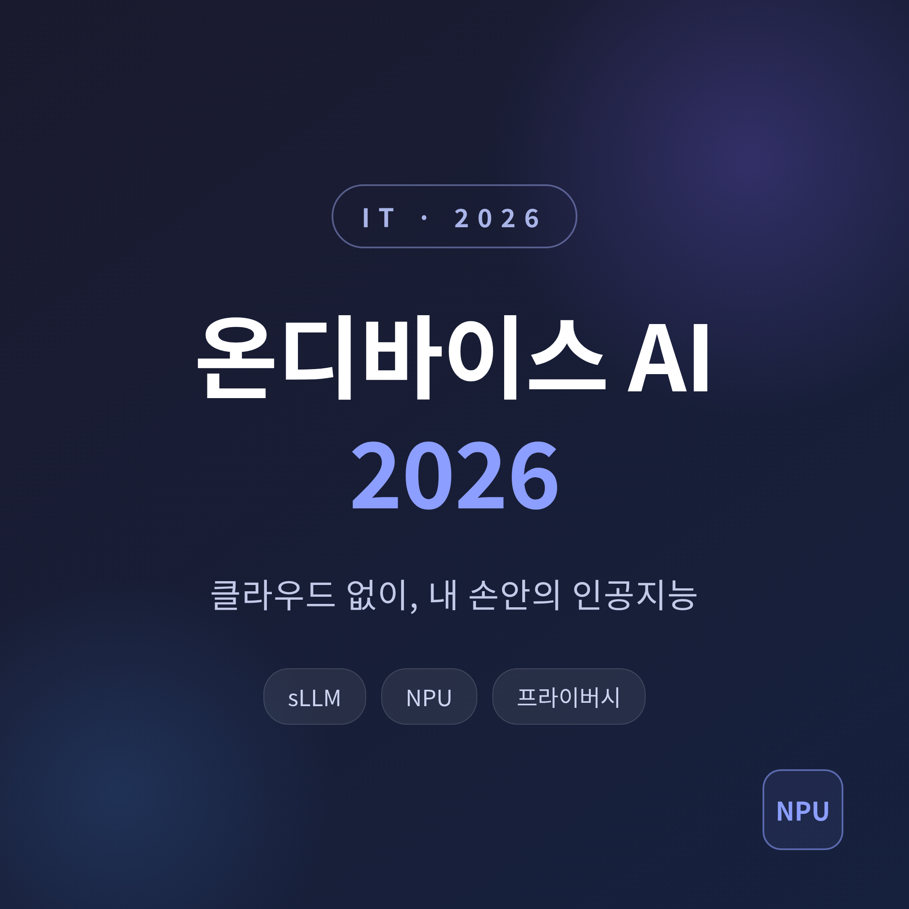
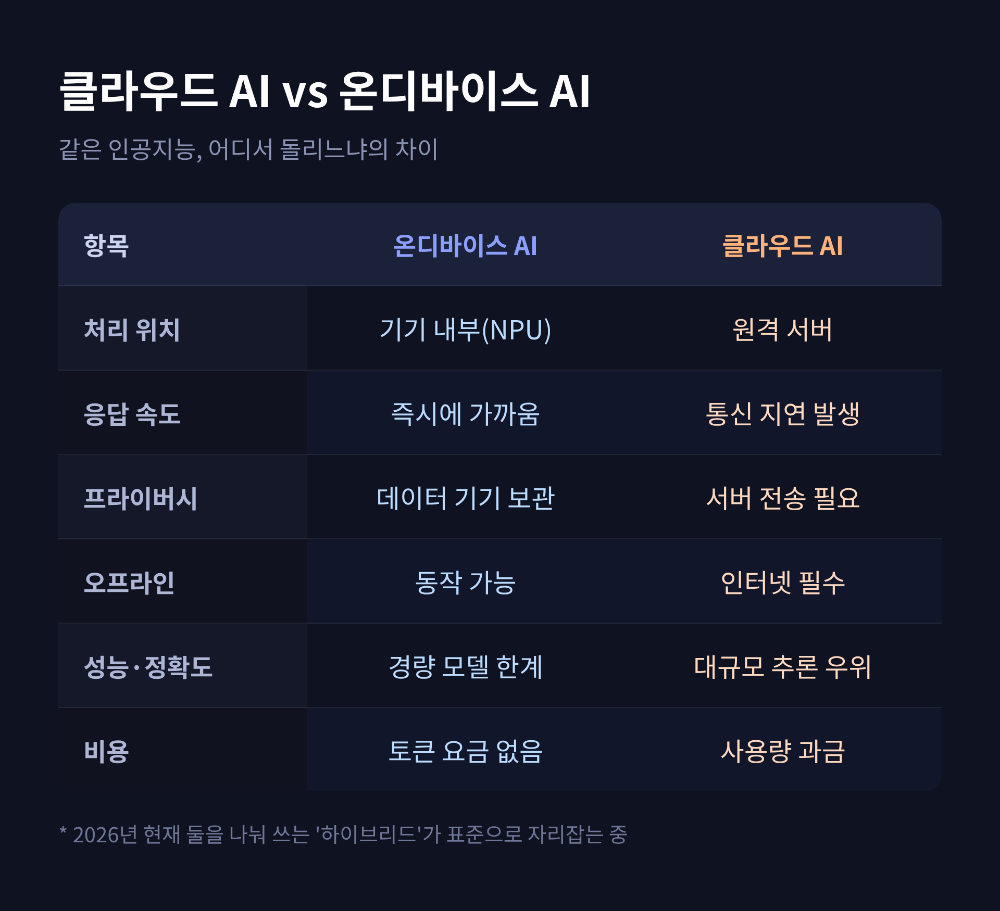
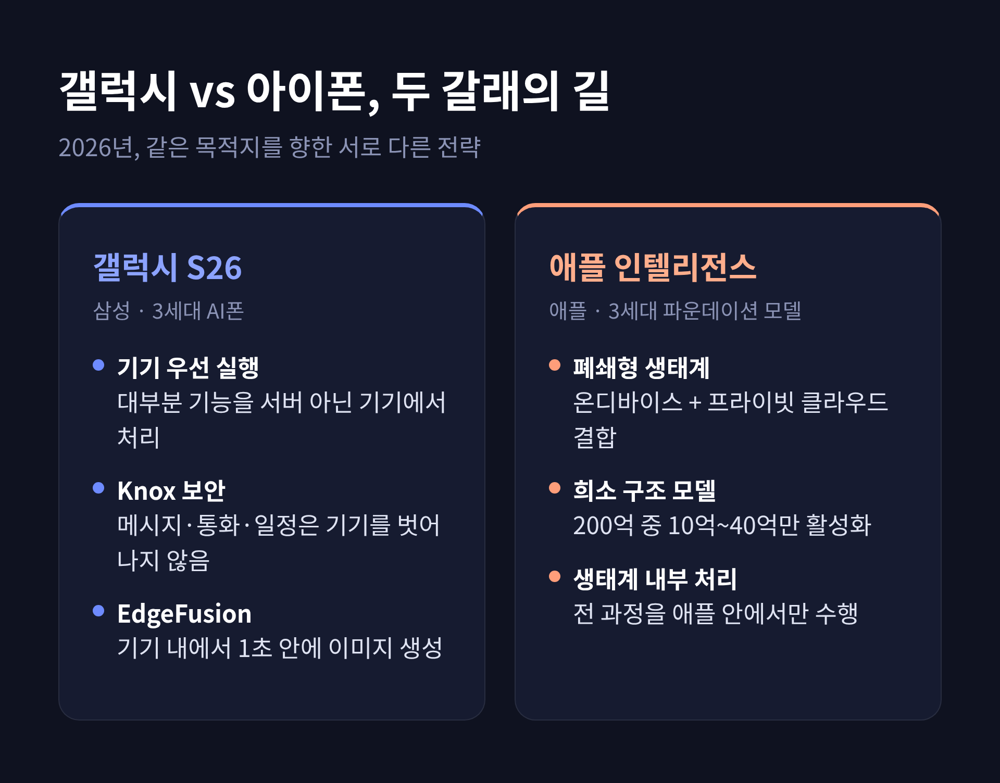
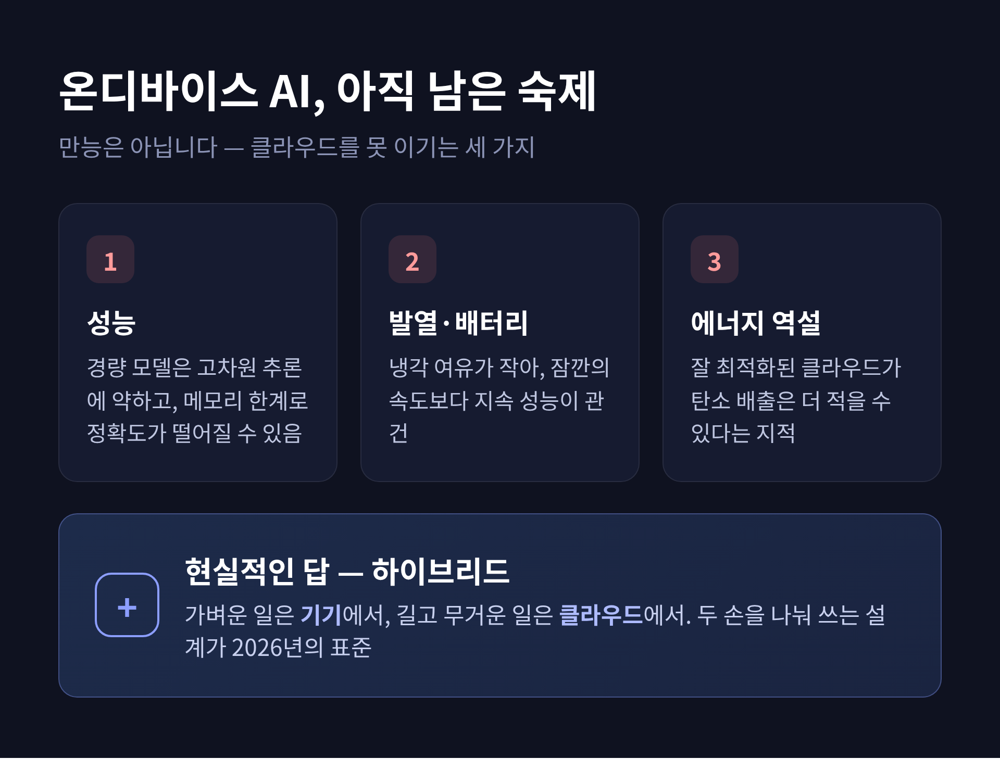

이번 글에서는 2026년의 온디바이스 AI를 정리해 보겠습니다. 스마트폰과 PC가 클라우드 없이 직접 인공지능을 돌리는 흐름, 그 이점과 아직 남은 한계를 함께 살펴봅니다. 결론부터 말씀드리면, 온디바이스 AI는 빠르고 안전하지만 만능은 아닙니다. 핵심은 "기기와 클라우드를 나눠 쓰는 균형"에 있습니다.
온디바이스 AI는 클라우드 서버가 아니라 기기 안에서 직접 인공지능을 돌리는 방식입니다.
예전에는 음성 명령 하나도 서버를 거쳐야 했습니다. 지금은 상당수 작업이 기기 안에서 끝납니다.
이걸 가능하게 한 부품이 NPU입니다. 신경망처리장치라고 부릅니다. AI 연산만 전담하는 칩으로, 같은 작업을 CPU나 GPU로 처리할 때보다 전력 효율이 훨씬 좋습니다. 2026년 현재 NPU는 고급 기기뿐 아니라 중급형 스마트폰에도 사실상 표준으로 들어갑니다.
핵심은 "데이터가 기기 밖으로 나가지 않는다"는 점입니다. 속도, 프라이버시, 오프라인 동작. 이 세 가지가 온디바이스 AI의 약속입니다.
거대한 모델은 데이터센터를 필요로 합니다. 스마트폰에는 들어갈 수 없습니다.
그래서 등장한 것이 소형언어모델, 즉 sLLM입니다. 보통 10억에서 140억 파라미터 규모로, 손안의 기기에서 돌아가도록 설계됩니다. 마이크로소프트 Phi-4, 구글 제미나이 나노 2, 애플 인텔리전스 모델, 메타 라마 3.2 등이 2026년의 대표 주자입니다.
작은 모델의 가치는 분명합니다. 클라우드 API가 없어도 쓸 수 있다는 것입니다. 인터넷이 끊겨도 동작하고, 토큰 사용료 같은 비용 걱정도 줄어듭니다. 응답은 즉시에 가깝습니다.

업계의 무게중심도 옮겨가고 있습니다. 예전엔 무조건 크게 만드는 경쟁이었습니다. 지금은 작게, 그리고 기기에 맞게 최적화하는 쪽으로 흐름이 바뀌었습니다.
2026년의 두 거인은 같은 목적지를 향하되 다른 길을 택했습니다.
삼성은 2월 언팩에서 갤럭시 S26 시리즈를 공개했습니다. '3세대 AI폰'을 내걸고, 대부분의 AI 기능을 서버가 아닌 기기에서 실행한다고 밝혔습니다. 개인 메시지, 통화 내용, 생체정보, 일정 같은 민감한 정보는 기기를 벗어나지 않습니다. Knox Vault와 양자내성암호 기반 암호화로 보호하고, 사용자가 온디바이스 처리와 클라우드 처리를 직접 고를 수도 있습니다.
흥미로운 사례가 EdgeFusion입니다. 삼성과 국내 기업 Nota가 함께 만든 온디바이스 이미지 생성 모델로, 갤럭시 S26 울트라에 처음 실렸습니다. 클라우드를 거치지 않고 기기 안에서 1초 안에 이미지를 만들어 냅니다.
애플은 결이 조금 다릅니다. 온디바이스 처리와 자체 프라이빗 클라우드를 결합하되, 모든 과정을 애플 생태계 안에서만 돌립니다. 2026년 6월에는 3세대 파운데이션 모델을 공개했습니다. 기존 30억 파라미터 모델의 후속과 함께, 200억 파라미터 희소 구조 모델을 더했습니다. 한 번에 10억에서 40억 파라미터만 활성화해 효율을 챙기는 방식입니다.

숫자만 보면 발전 속도가 가파릅니다.
갤럭시 S26 울트라는 NPU 성능이 39% 올랐습니다. 삼성의 자체 칩 엑시노스 2600은 세계 최초 2나노 공정으로, NPU 성능 38% 향상을 내세웠습니다(삼성은 AI 성능 기준 최대 113% 향상도 언급합니다). 퀄컴 스냅드래곤 8 엘리트 5세대는 헥사곤 NPU가 전 세대보다 약 37% 빨라졌습니다.
PC 쪽은 기준이 더 또렷합니다. 마이크로소프트는 Copilot+ PC의 조건으로 NPU 40 TOPS, 메모리 16GB, 저장공간 256GB를 요구합니다. 40 TOPS가 2026년 온디바이스 AI의 출발선인 셈입니다. 퀄컴 스냅드래곤 X 엘리트는 45 TOPS를 냅니다.
여기서 균형을 잡아야 합니다. 온디바이스 AI가 모든 걸 해결하지는 못합니다.
첫째는 성능입니다. 작은 모델은 고차원적 추론에 약합니다. 기기 메모리에 따라 모델 크기가 제한되고, 정확도가 떨어질 수 있습니다. 학습한 데이터의 양도 클라우드 모델에 미치지 못합니다.
둘째는 발열과 배터리입니다. 스마트폰과 울트라북은 냉각 여유가 작습니다. 잠깐 빠른 것보다 오래 견디는 지속 성능이 중요한 이유입니다. NPU를 넣을수록 저전력·고밀도 설계가 숙제로 남습니다.
셋째는 뜻밖의 역설입니다. 작은 배터리로 충전과 방전을 반복하다 보면, 같은 연산이라도 잘 최적화된 클라우드가 오히려 탄소 배출이 적을 수 있다는 지적도 있습니다.
그래서 현실적인 답은 하나로 모입니다 — 하이브리드입니다. 가벼운 일은 기기에서, 길고 무거운 일은 클라우드에서. 두 손을 나눠 쓰는 설계가 2026년의 표준으로 자리잡고 있습니다.

2026년 말까지 전 세계 약 7억 5천만 개의 앱이 언어모델을 품을 것으로 전망됩니다. 디지털 업무의 절반가량을 자동화한다는 그림입니다. 경량·로컬 모델이 없었다면 불가능했을 변화입니다.
비즈니스 모델도 윤곽이 잡혀 갑니다. 갤럭시 AI는 2026년 이후 일부 기능의 유료화가 점쳐집니다. 대부분의 온디바이스 기능은 무료로 두고, 클라우드를 쓰는 일부에만 요금을 매기는 방향으로 보입니다.
아직 완벽하지는 않습니다. 작은 모델의 한계도, 발열도 여전히 숙제입니다. 다만 방향만큼은 분명해 보입니다.
끝으로 한 마디만 더 드리겠습니다.
온디바이스 AI의 가치는 화려한 성능 경쟁에 있지 않습니다. "내 데이터가 내 기기 안에 머문다"는 안심, 거기에 본질이 있다고 생각합니다.
내 손안의 인공지능이 똑똑해지면서도 조용히 나를 지켜 준다면, 우리는 기꺼이 그 손을 잡게 되지 않을까요.